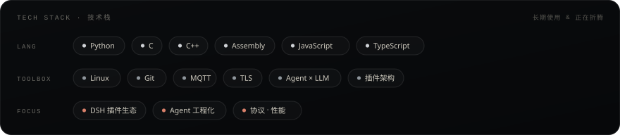
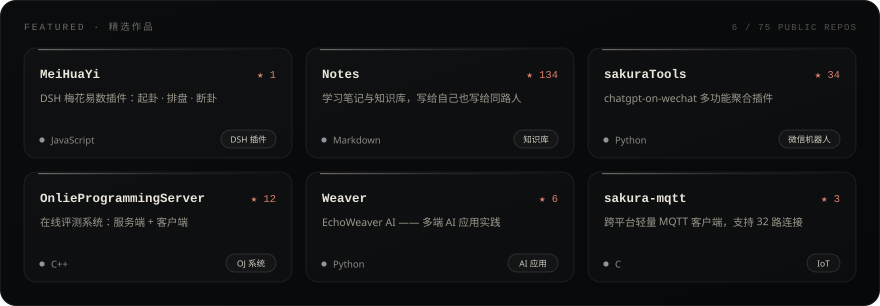
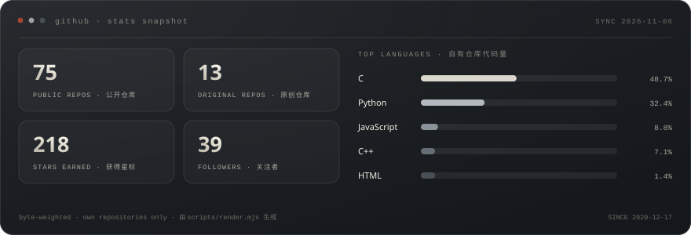

01 · ABOUT
关于我
我是 玄安，坐标上海。
从 C 指针一路折腾到 AI Agent —— 底层够硬，上层够野。
- 🔭 正在构建 DSH 插件生态 —— 梅花易数 MeiHuaYi 已上架
- 🧠 长期折腾 Multi-Agent / LLM 工程化，以及
chatgpt-on-wechat 生态
- 🛠 偶尔硬核 C / C++ / 汇编：MQTT 客户端、TLS 实战、在线评测系统
- ✍️ 学习笔记 Notes —— 134 ★ 的知识库
- 💬 信条 I believe that technology makes dreams greater.
02 · STACK
技术栈

03 · SELECTED WORK
精选作品

全部 75 个仓库 → Repositories
04 · STATS
数据面板

05 · NOW
最近在忙
- 把 DSH 插件做到真正「开箱即用」——梅花易数之后，还在憋下一个
- 啃 Agent 的工程化落地：记忆、工具调用、多智能体协作
- 偶尔回到底层，写点 C：MQTT、TLS、协议细节与性能
06 · CONTACT
找到我